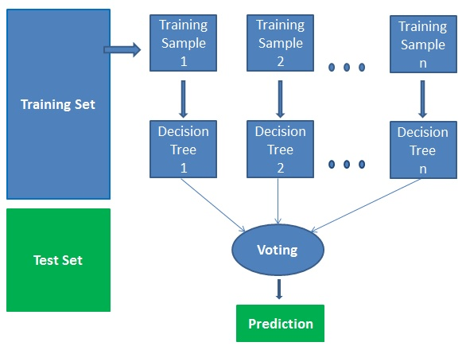

Predictors of Increased Poverty
Based on your areas of focus, the model sets default weights based on Random Forest Classifier
importance based on an increase of 2% or more for the selected indicator.
Random Forest Classifier
Values are per 1,000 individuals.
Disclaimer: Data is based on projections which is prone to error.
predicting 2017
For model training, a "y" column value of 1 indicated zip codes where poverty increased in 2017 after increasing or remaining steady from 2015.

Best Params:
max depth: 8;
n-estimators: 100
Accuracy before tuning: 69%.
Accuracy after tuning: 71%.